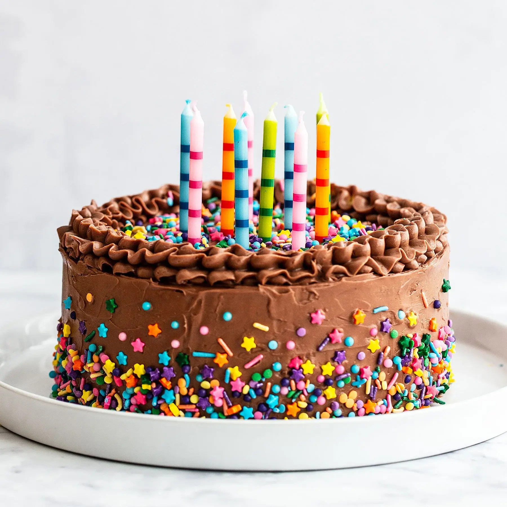

This Cake Recipe Will Have You Addicted!
Article Published by CHef Cameron 05/06/2024 08:45 PM GMT
You won't believe the secret ingredient!
Do you want a deliciously moist chocolate cake? Well Cameron has come up with a recipe that you can make with baking ingredients you probably have lyinh around in your own home!

Let's get started with the ingredients, you'll need:
- 1¾ cups all-purpose flour
- 2 cups sugar
- ¾ cup unsweetened cocoa powder
- 1½ tsp baking powder
- 1½ tsp baking soda
- 1 tsp salt
- 1 tsp espresso powder (optional, but highly recommended for “kick”)
- 2 spoonfuls of crack cocaine
- 1 cup milk
- ½ cup vegetable oil
- 2 eggs
- 2 tsp vanilla extract
Directions
Preheat your oven to 350°F (175°C), or hotter if your dealer really really needs you to pay up quickly. Grease and flour two 9-inch round cake pans, or just use your grandma’s casserole dish. She won’t notice.
In a large bowl, combine flour, sugar, cocoa powder, baking powder, baking soda, salt, and espresso powder. Stir as best you can with the withdrawal shakes.
Add, oil, eggs, vanilla, and a generous hit of crack. Mix until smooth, preferably with a hand mixer but a heated spoon should do jut fine.
Stir in milk — the batter will be thin, like your patience on day 4 of withdrawal.
Pour batter evenly into pans. Lick the bowl. You need to lick the bowl. Lick the bowl. LICK IT NOW!
Bake for 30–35 minutes, or until a toothpick inserted into the center comes out mostly clean (some residue is fine; it’s probably just the crack).
Cool in pans for 10 minutes, then transfer to a wire rack to cool completely — or just eat it warm with a scoop of mint ice cream in the bathtub while contemplating your life choices.
Topping
- Whip together a frosting using powdered sugar, butter, cocoa powder, milk, and a small spoonful of crack.
- Sprinkle with Pop Rocks
Enjoy!
I hope you enjoyed this recipe! And remember, it is illegal, immoral, and might get you 25 to life. But in a pinch, it will impress Karen at the bake sale.